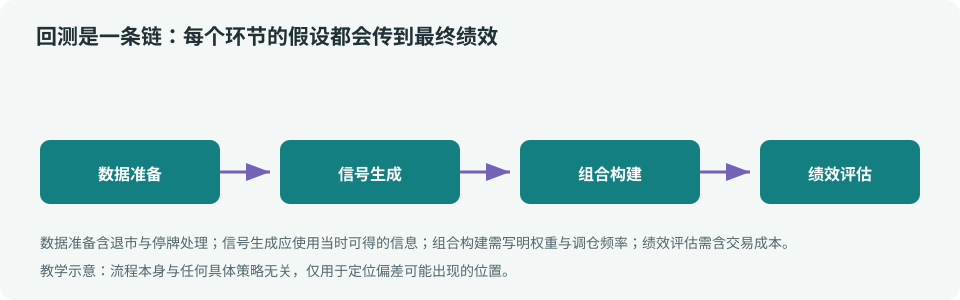
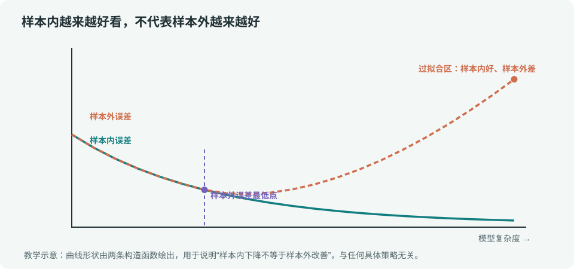

CHAPTER 19 · QUANTITATIVE SELECTION
量化选股入门：因子、回测与过拟合
量化不是把感觉换成公式就万事大吉；它交换出去的是可复现的纪律，交换进来的是偏差、过拟合与交易成本这些新风险。
回测年化很高，为什么实盘可能亏钱
一份回测报告显示年化收益很高、回撤很小，看起来无懈可击。但同一套规则搬到实盘后可能很快亏损。这并不是“市场变了”这一句话能解释的：更常见的原因是，回测本身就已经包含了实盘不可能具备的条件——用了当时还不知道的信息、用今天的股票池回看过去、或者把参数调到完美拟合历史噪声。
因此量化研究的第一步不是找因子，而是先想清楚回测结果在什么条件下才可信。本章的顺序是：先说清楚量化在做什么，再讲因子为什么能解释收益，最后集中处理回测与实盘之间的三道鸿沟——偏差、过拟合与交易摩擦。
本章边界：量化策略的收益是概率性的，不是确定性的。文中所有曲线与数值均为构造的教学示意，不代表任何真实策略或基金的历史表现。
量化选股：把决策写成可复现的规则
量化选股指用数据和模型驱动选股与调仓，而不是凭消息与感觉。它并不要求预测力更强，而是要求决策可重复、可检验：同一条规则换一个时间段、换一个人来执行，结果应当基本一致。
它带来三个性质：纪律性（规则说买说卖，减少临场情绪）、广度（可同时处理全市场数千只标的）、可复现（同一规则可回测比较）。代价也同样明显：规则会系统性地重复同一类错误，且对数据质量与执行成本高度敏感。
需区分两类应用：以高频交易为目标的系统依赖极短持有期与微观结构优势，普通投资者难以复制；而低频因子选股持有期较长、容量较大，是本课程的重点。
因子：收益分解与两种解释
因子（Factor）是能够解释股票收益差异的可度量特征，例如估值、动量、质量或波动率。把单只股票的收益拆成市场部分、因子部分与特异性部分：
因子溢价有两种常见解释：风险补偿（承担了某种系统性风险，因此要求更高回报）与行为偏差（利用参与者的系统性错误定价）。同一因子的溢价可能同时包含两部分，哪种成分占主导往往难以直接区分。
实践中很少只用单一因子，因为每个因子都有“失灵期”。把几个低相关因子组合起来，目的是让暴露不集中于同一种风险。至于一个因子“好不好用”，需要看它的信息系数（IC）与因子收益的稳定性，这将在下一章展开。
回测的四个环节
回测（Backtesting）是在历史数据上检验规则的过程。一个完整的回测至少包含四个环节，每一步都需要记录“当时可得的信息边界”：
- 数据准备：行情与财务数据，需处理退市、停牌与价格复权。
- 信号生成：在每个调仓日按规则产生买入与卖出信号。
- 组合构建：确定权重与调仓频率，并约束单票与行业上限。
- 绩效评估：计算收益、波动、最大回撤与夏普比率，并扣除交易成本与滑点。

只有四个环节都写清楚，结果才有讨论价值。例如“年化 20%”如果不说明是否包含交易成本、是否使用退市样本、调仓频率如何，这个数字就无法被复现，也无法与别的策略比较。
回测的四种典型偏差
这四类错误几乎一定会出现在新手的第一版回测里，它们都会系统地高估策略表现：
| 偏差 | 成因 | 修正方向 |
|---|---|---|
| 幸存者偏差 | 只用当前仍上市的股票，忽略退市与重组 | 使用包含已退市标的的历史成分股 |
| 前视偏差 | 用了当时尚未公布或尚未发生的信息 | 按公告实际披露日对齐信号 |
| 数据窥探 | 在同一段数据上反复试探直到“最优” | 预留样本外区间，先定规则后看结果 |
| 参数过优化 | 参数完美拟合历史噪声 | 减少参数、增加参数敏感性测试 |
特别要注意前视偏差的一种隐蔽形式：用当日收盘价信号按当日收盘价成交。现实中你只能在收盘后才能算出这个信号，因此成交至少应推到下一交易日。这类细节对高频策略影响极大。
过拟合：样本内与样本外
过拟合指模型把历史数据中的噪声也当成规律，于是样本内表现很好、样本外表现很差。它的典型形状是一条“样本内误差单调下降、样本外误差先降后升”的曲线：复杂度过低时偏差大，复杂度过高时方差大。

识别过拟合的常用做法：把数据切成样本内与样本外，用样本内定规则、用样本外评估；或做滚动前推检验（walk-forward）；并把参数数量写进研究记录。任何“只在回测里成立”的规律，都应视为尚未验证。
从回测到实盘的摩擦
即使回测无偏差，实盘仍会多出几项成本：佣金与税费、滑点（下单价与成交价的差）、流动性与涨跌停限制，以及资金容量（规模变大后冲击成本上升）。这些成本随换手率放大：换手越高，被吃掉的收益越多。
“回测夏普打几折”这类经验法则流传很广，但缺少可核验的统一来源，因此本章不引用具体折扣数字。更稳妥的做法是把佣金、印花税与冲击成本写成参数，在回测中显式扣除，然后对这些成本假设做敏感性测试：如果成本翻倍策略就不赚，那它的安全边际就很薄。
自我检验
练习
- 说出幸存者偏差与前视偏差的区别，各举一个例子。
- 给定 value=15、mean=20、std=5，算出标准化 z 值，并说明为什么要先标准化再合成因子。
- 为一个简单规则写出样本内与样本外的时间切分方案，并说明为何不能反复用样本外调试参数。
完成后应能独立回答：因子为什么能解释收益？回测的四个环节分别在哪里可能出错？过拟合为什么会导致样本外失效？这三个问题都不需要先学其他章节。
资料来源与适用范围
下列文献用于核对因子定价与回测过拟合的学术讨论；章节中的图形与数字均为自造的构造数据，不含任何真实策略或基金业绩。